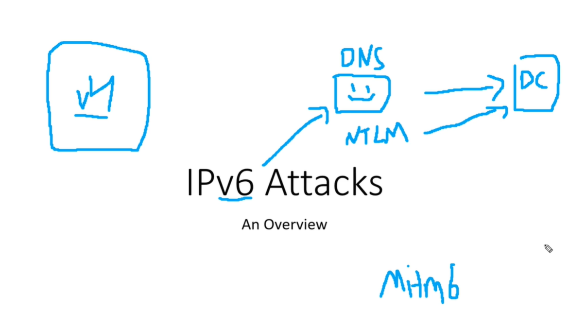

In IPV6 attacks we are mainly going to be talking about DNS takeover attacks via IPV6 and tHis is the go to attack
Previously it used to be Responder grab the hashes try to crack them and then it was SMB relay (i.e. if we are not able to crack the hashes try to rely them)
This is another form of relaying but much more reliable Cuz it uses IPV6
We typically run on IPV4 but chances are the network not even utilizing IP 6
So if we are utilizing IPV4 but IPV6 is turn on than who's doing DNS for IPV6 ?_?
And the answer usually is nobody's doing that

This is still very undetected (i.e. hard to detect) and still very very prominent in Network.